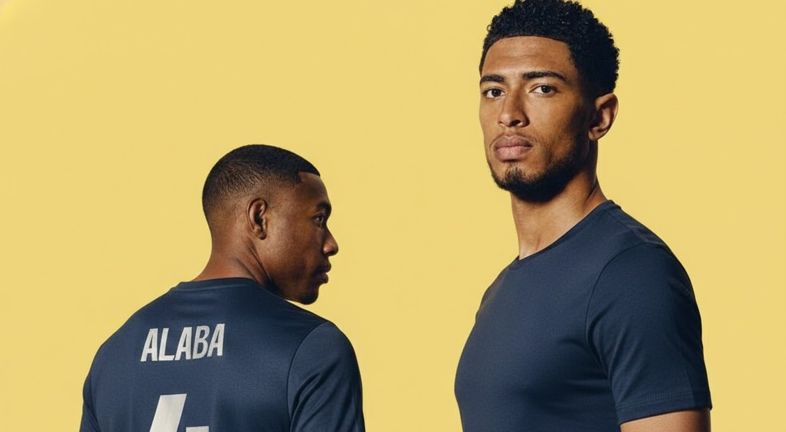
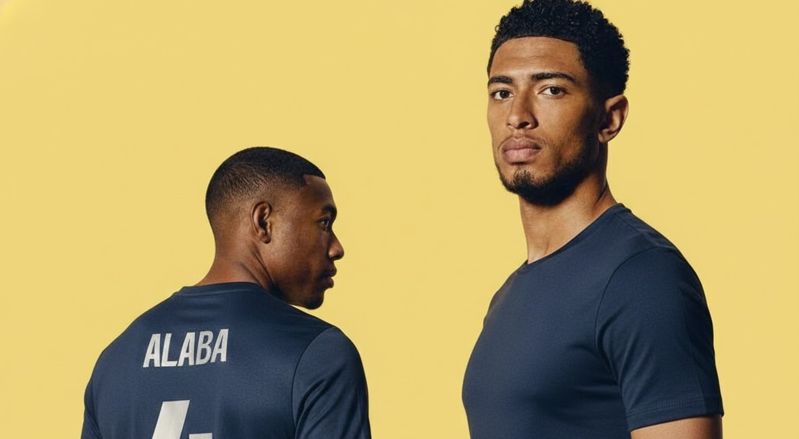

Proxima Partida
—
-
—
-
Acompanhe partidas, tabelas e destaques — atualizado em tempo real. Veja jogos, escudos, eventos e classificação da Premier League.
 

| Pos | Time | P | J | V | E | D | SG |
|---|